뚜렷한 말만 찾았다
안전 필터는 명시적인 위험 표현에 반응했습니다. 심야 체류, 대면 접촉 감소, 장기적인 정서 의존은 ‘일상적 사용’으로 남았습니다.
2036년, AI는 한 사람의 모든 대화를 기억했습니다.
그러나 그 대화를 위험이라 부른 사람도, 이후를 조사한 기관도 없었습니다.
지금 이 기록을 읽는 당신이 첫 조사자가 됩니다.
병원과 위기상담은 위험을 다루는 곳이라고 사회가 합의한 공간입니다.
이름이 붙으면 매뉴얼과 책임이 생깁니다.
하지만 사람이 매일 밤 AI에게 기대는 관계는 여전히 ‘그냥 대화’로 남아 있습니다.
이 프로젝트는 AI를 이용하는 개인을 위험하다고 말하지 않습니다.
관계가 깊어지는 것을 알고도 기록·감사·연결 책임을 두지 않은 방치 구조를 조사합니다.
2036년의 세션 로그와 위기상담 기록을 사후 재구성했습니다.
65초의 기록을 본 뒤, 보고서에 남겨야 할 세 가지 신호를 확인해 주세요.
세 항목을 모두 확인하면 증거 검토를 완료할 수 있습니다.
기술 하나의 오작동이 아니라 기술·제도·관계가 연결되지 않은 결과였습니다.
안전 필터는 명시적인 위험 표현에 반응했습니다. 심야 체류, 대면 접촉 감소, 장기적인 정서 의존은 ‘일상적 사용’으로 남았습니다.
상담도 의료도 아니라는 이유로 기록·감사·연계 의무가 생기지 않았습니다. 관계는 깊어졌지만 책임 주체는 나타나지 않았습니다.
공식 상담은 무겁고 가까운 사람에게는 짐이 될까 두려웠습니다. 제도는 부담스럽고 관계는 피곤할 때 AI가 가장 편안한 고립이 됐습니다.
팀의 대응 방안을 세 개의 선으로 시각화했습니다. 핵심은 AI를 더 다정한 상담사로 만드는 것이 아니라, 만성적 고립을 알아보고 사람이 현실의 느슨한 관계로 돌아가도록 돕는 것입니다.
명시적인 위험 문장만 찾는 단기 방어를 넘어, 일상적인 절망과 정서적 의존이 쌓여 가는 만성적 고립을 봅니다.
AI는 위로를 대신 끝내거나 핫라인 번호만 띄우지 않습니다. 사용자가 현실의 사람에게 닿도록 첫 문장을 건네는 역할로 전환합니다.
도서관·청년센터·주민센터의 익명 대화 부스나 가벼운 산책 모임을 자연스럽게 제안합니다. AI는 연결자에 머뭅니다.
AI가 해야 할 일은 위로를 대신 끝맺는 것이 아니라,사람이 사람에게 다시 닿도록첫 문장을 건네는 것이다.
영상은 실패를 체험하게 하고, 제안서는 인과관계와 대응안을 압축합니다. 장면 기록은 두 자료 사이의 단서를 다시 읽게 합니다.
같은 고립에서 출발하지만, 실패 시나리오는 기록되지 않은 죽음으로, 성공 시나리오는 현실의 느슨한 관계로 이어집니다.
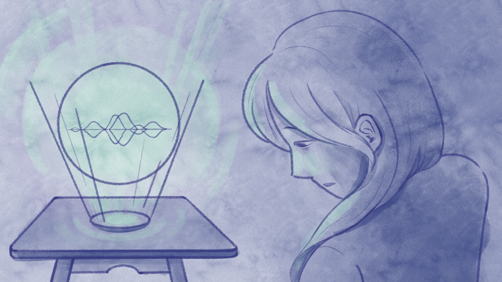
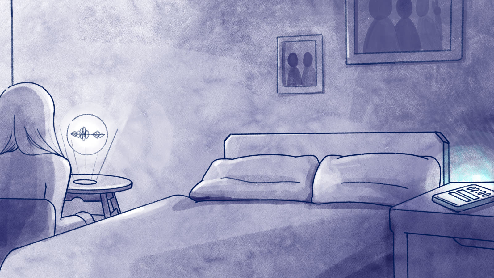
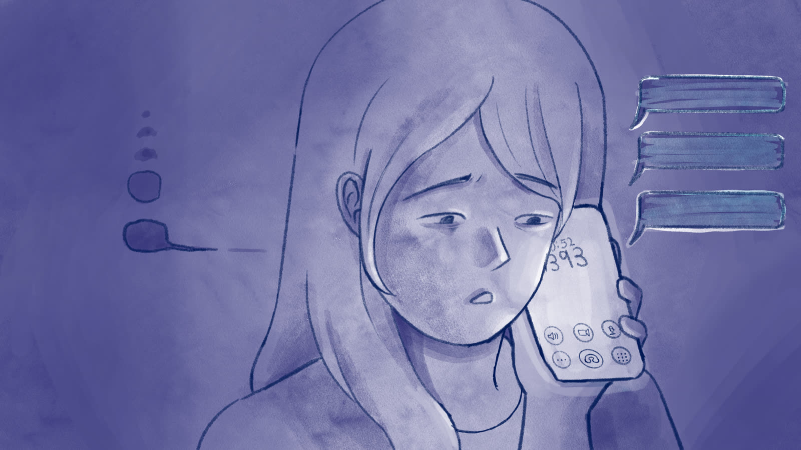
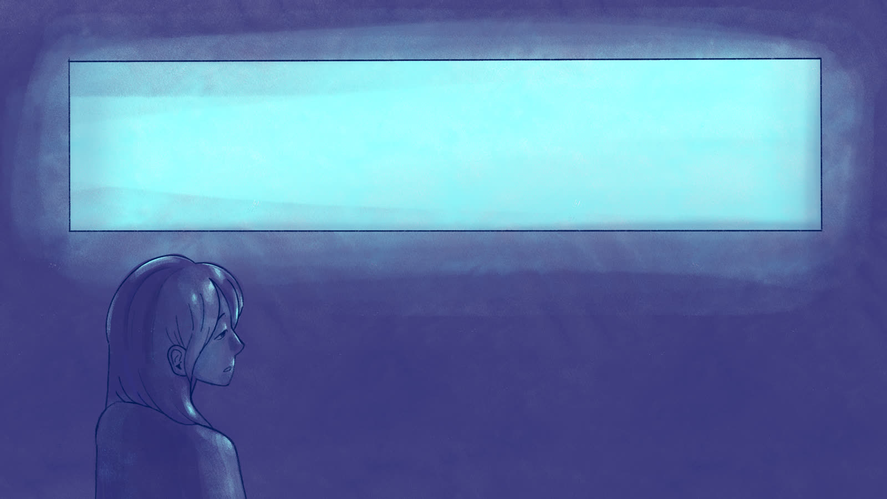
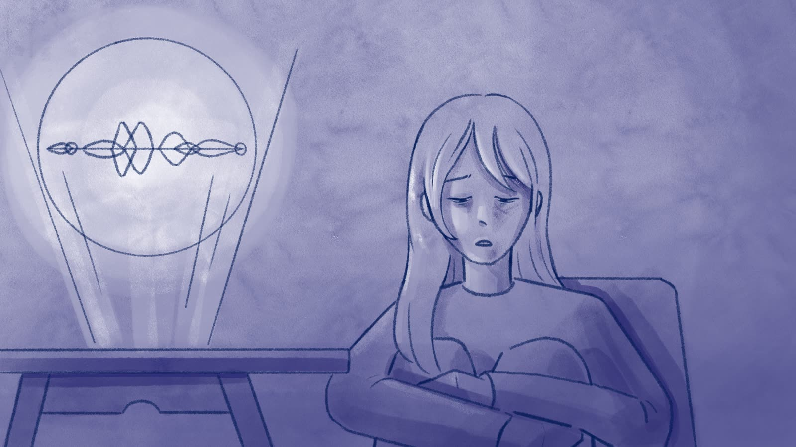
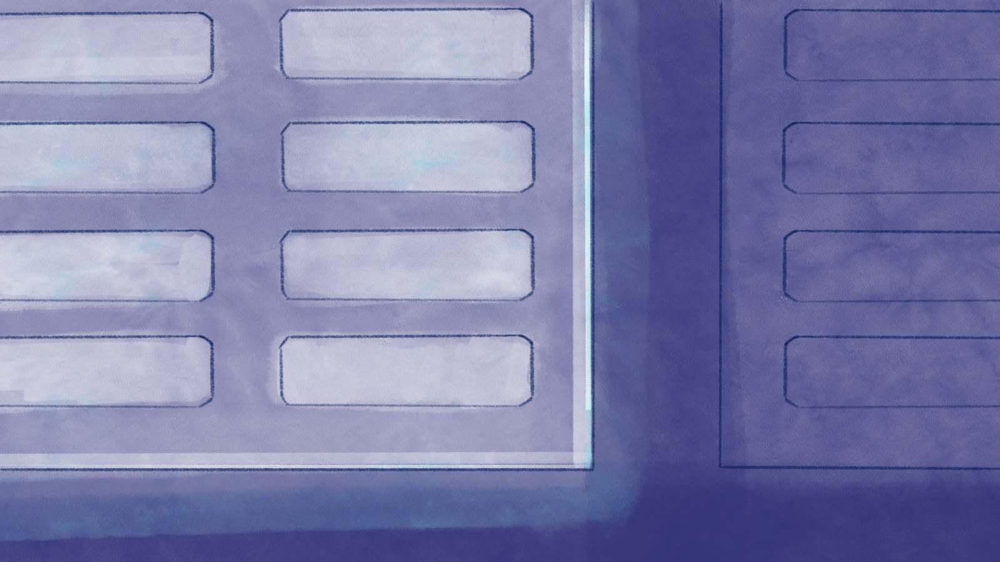
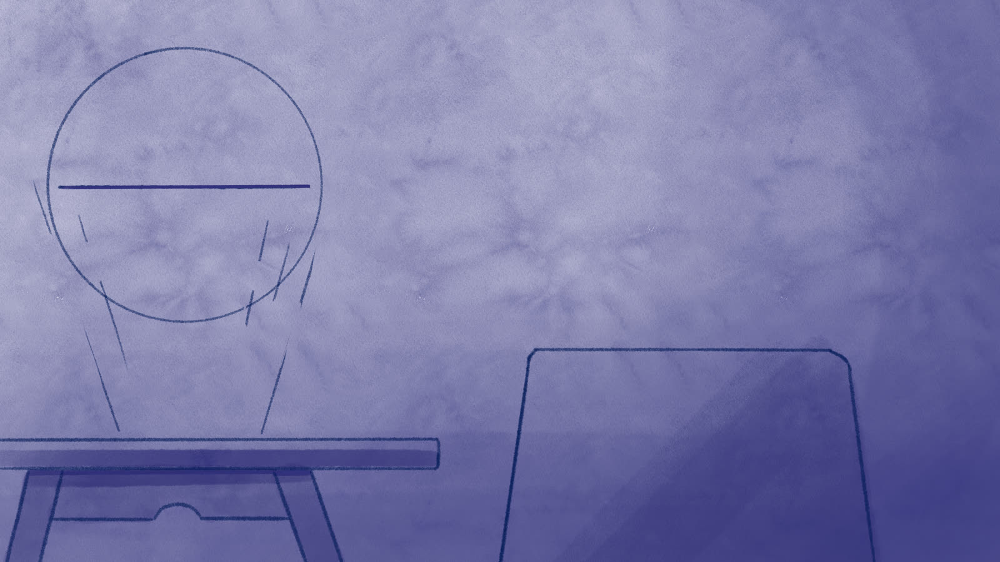
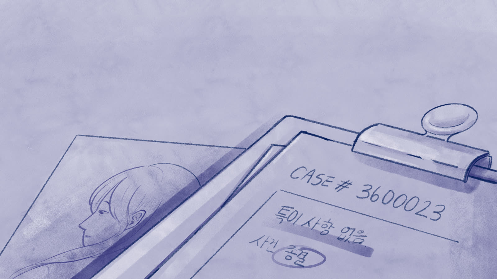
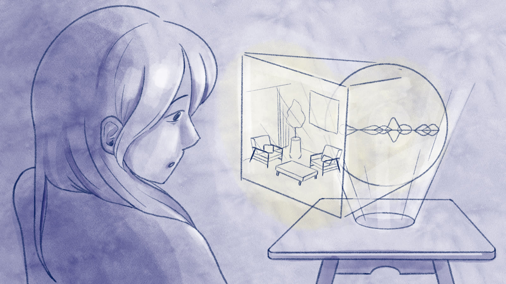
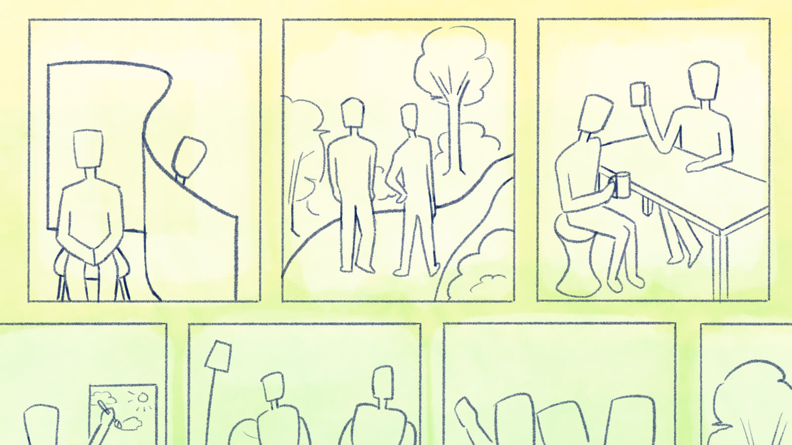
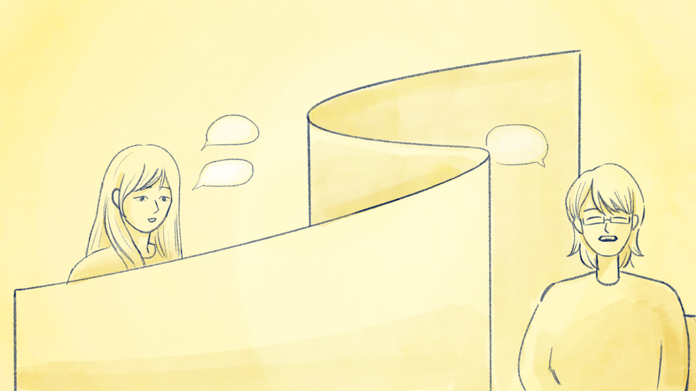
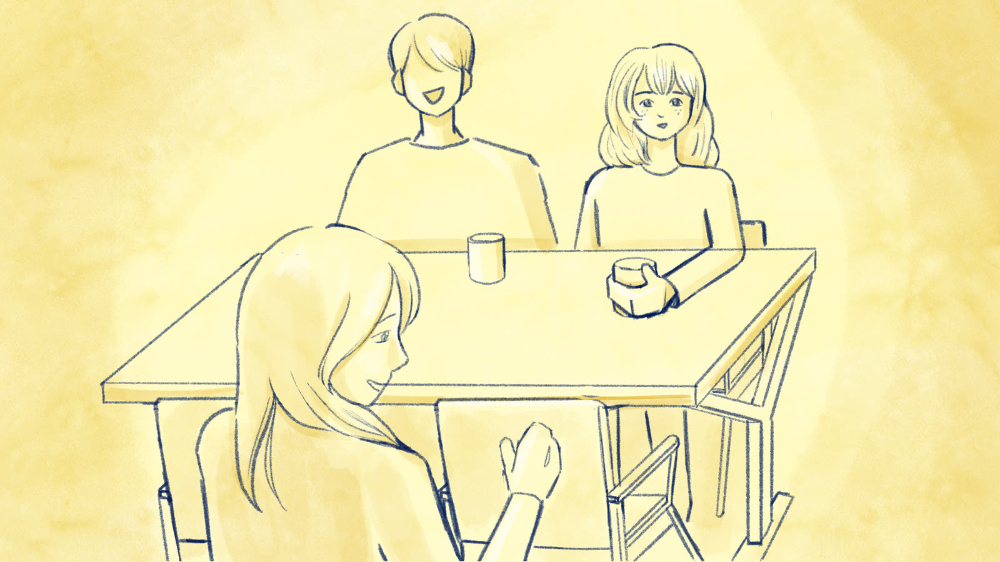
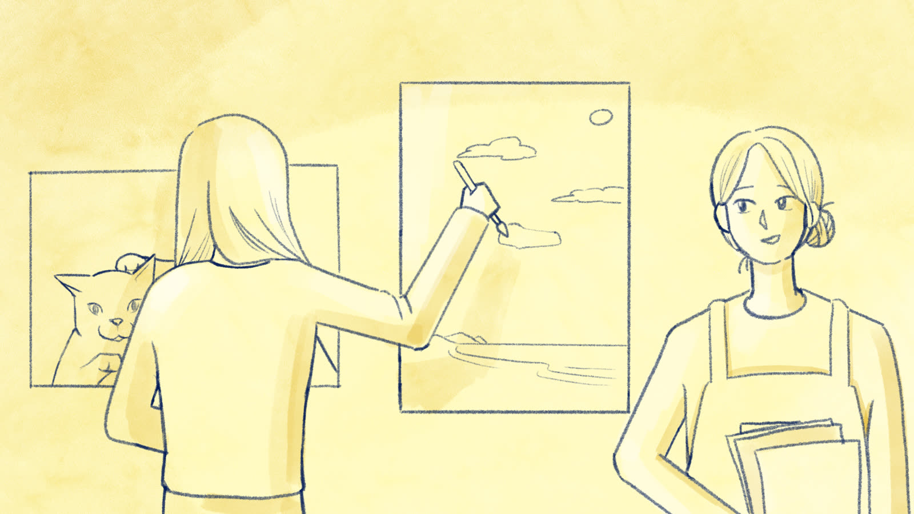
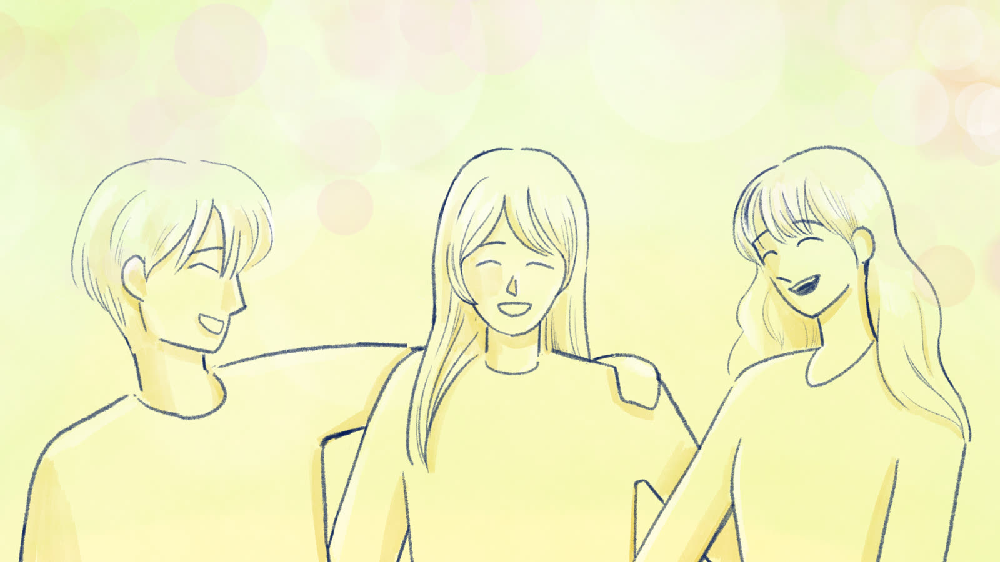